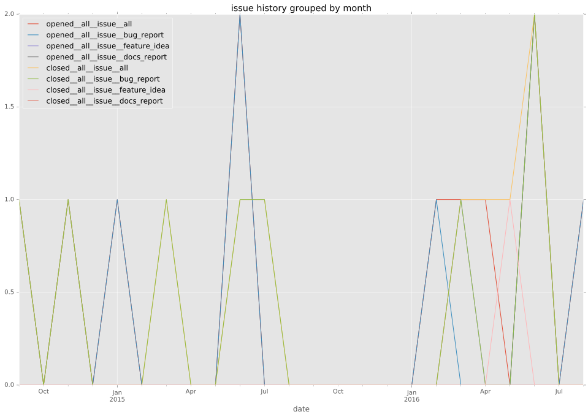
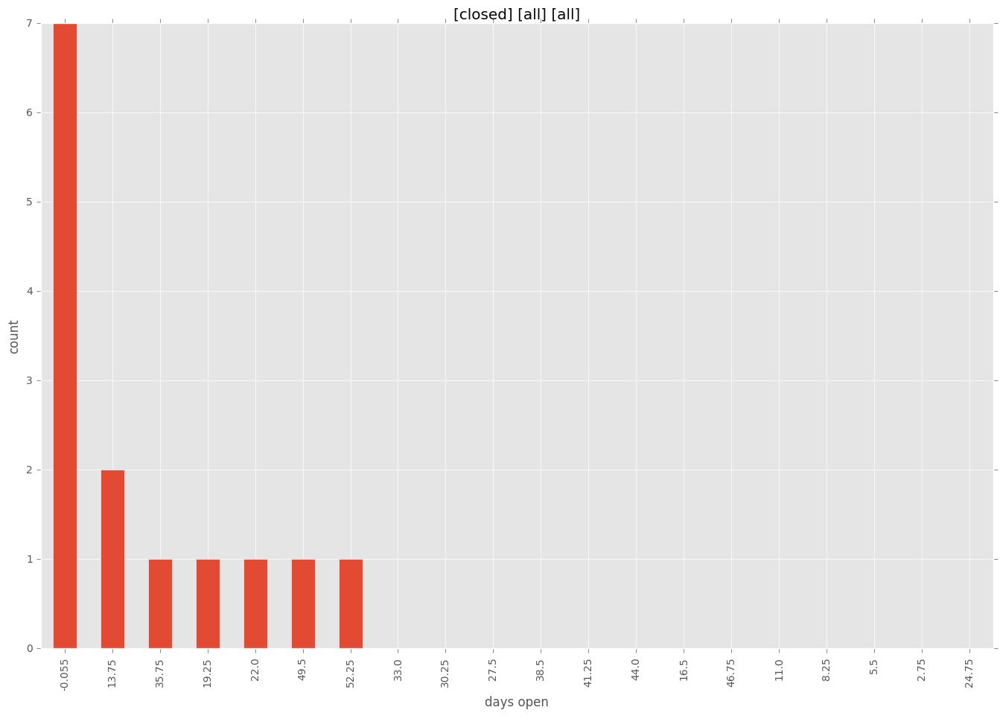
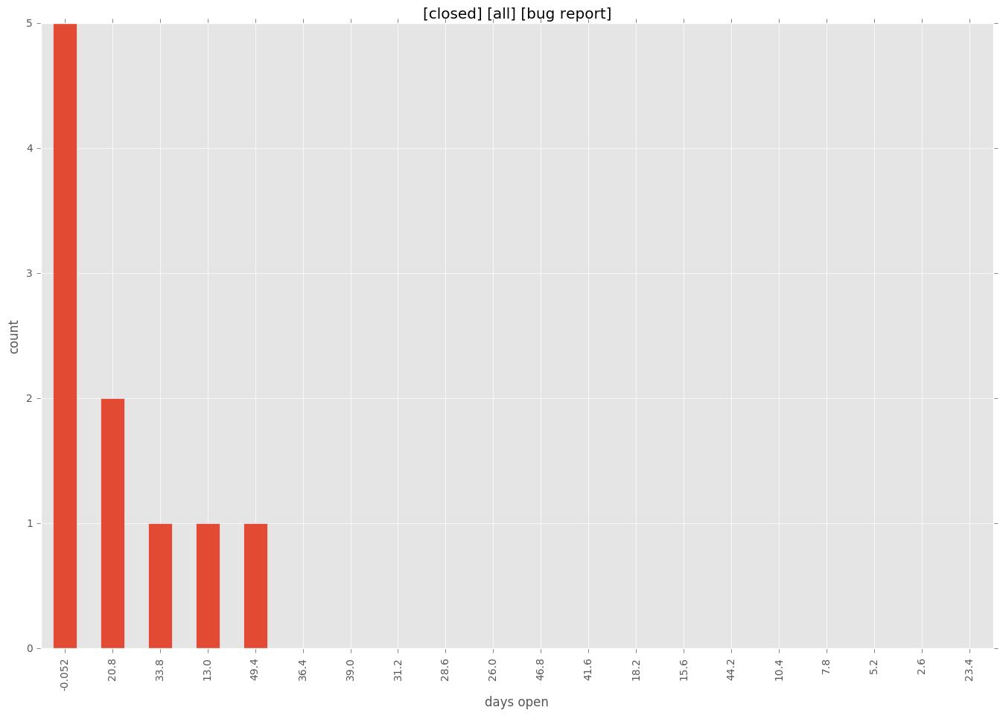
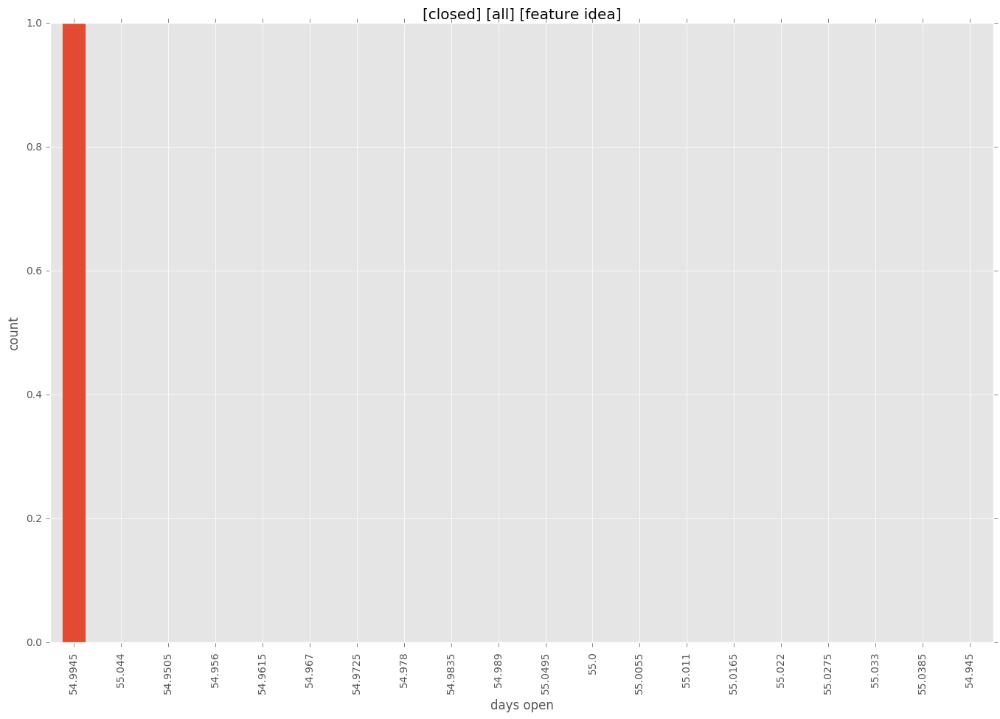
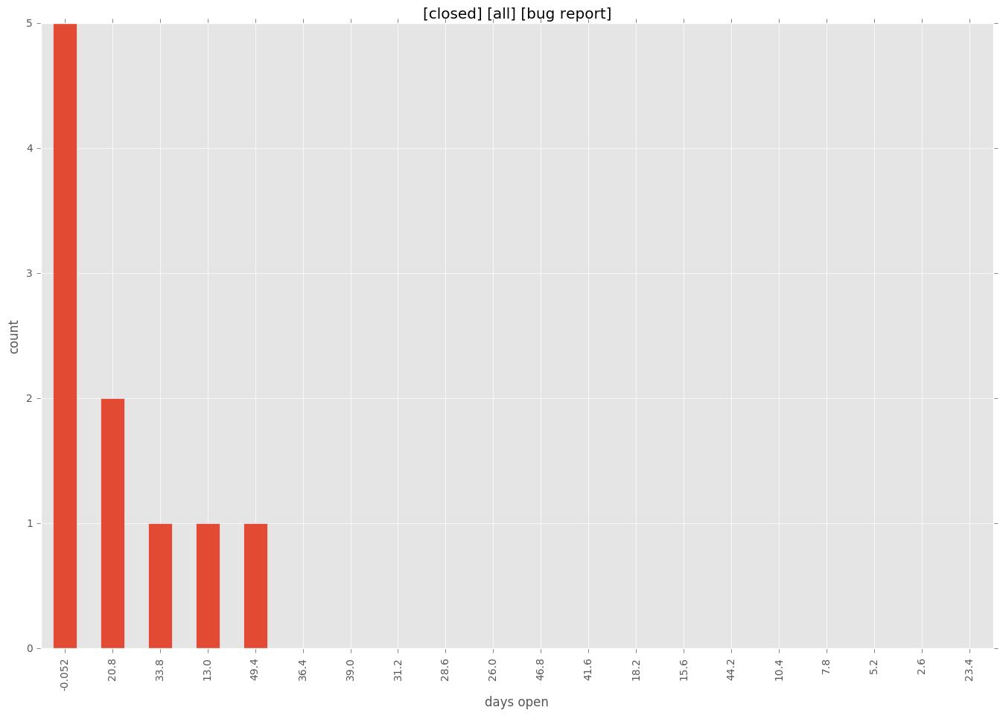
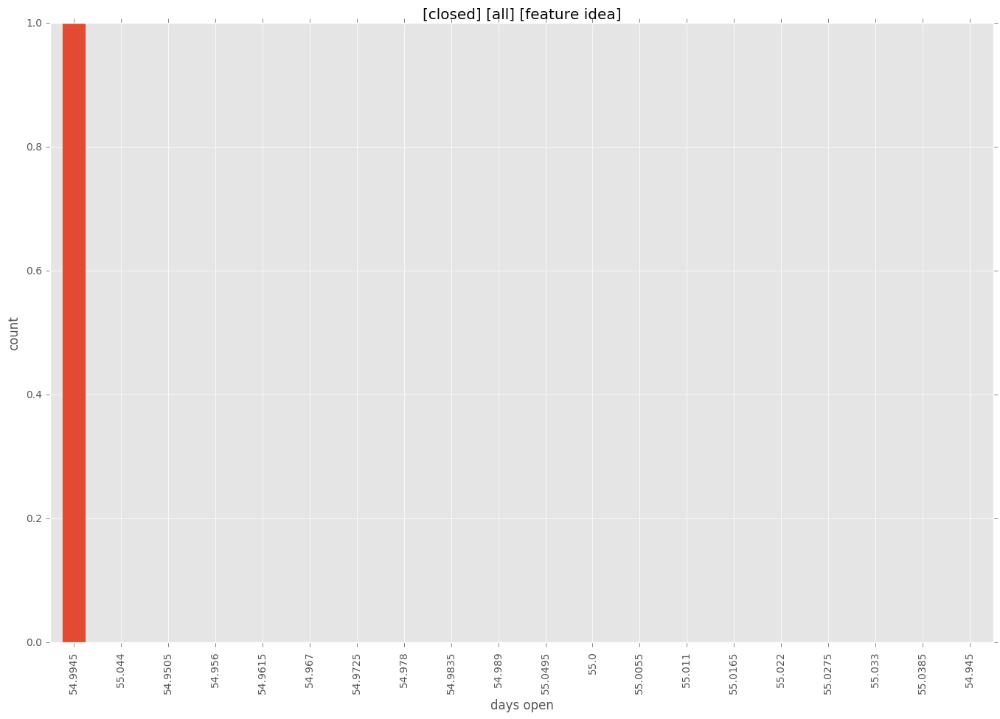

total issue counts
all: 1
feature pull request: 1
pullrequest: 2
bugfix pull request: 1
feature idea: 1
issue: 13
bug report: 11
issue history

days open by issue type
bugfix pull request
count: 2
std: 0.0
min: 0
max: 0
median: 0.0
mean: 0.0
all
count: 16
std: 19.0997382181
min: 0
max: 55
median: 0.5
mean: 13.5
pullrequest
count: 0
std: nan
min: nan
max: nan
median: nan
mean: nan
feature pull request
count: 2
std: 0.0
min: 0
max: 0
median: 0.0
mean: 0.0
feature idea
count: 1
std: nan
min: 55
max: 55
median: 55.0
mean: 55.0
issue
count: 0
std: nan
min: nan
max: nan
median: nan
mean: nan
bug report
count: 10
std: 18.2759708664
min: 0
max: 52
median: 7.5
mean: 14.7
closures grouped by total days open

 


